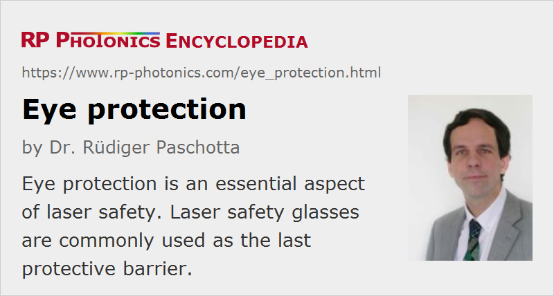

Eye Protection
Definition: the protection of eyes against laser hazards
German: Augenschutz
How to cite the article; suggest additional literature
Author: Dr. Rüdiger Paschotta
Eye protection is an important type of measure in the context of laser safety, as the eyes are particularly sensitive to laser radiation and at the same time particularly important. Different kinds of laser radiation can cause different types of damage. Most important is damage of the retina as most often caused by excessive irradiation in the visible or near-infrared spectral range, but there can also be damage of the cornea or the lens caused by mid-infrared light (causing overheating) or ultraviolet light (causing cataracts of the eye's lens).
Different kinds of eye protection are required when working with dangerous light sources. A first approach should target the source, preventing dangerous beams from hitting the face in the first place. However, this may often not be achieved with the required certainty. Therefore, it is often necessary to use additional eye protection with special kinds of laser safety glasses (Figure 1; also called safety goggles). These can contain absorbing optical filters and/or multilayer structures (dielectric coatings) which operate as Bragg mirrors for certain wavelengths.
Requirements on Safety Glasses
Safety glasses should fulfill a number of requirements:
- a high enough level of attenuation of incident laser light by the glass, achieved by absorption and/or reflection
- adequate protection against beams coming from the side (particularly when working with high power levels)
- durability of both the glass and the case, even under conditions of strong heating by an incident laser beam; absence of photo-bleaching (particularly for use with ultrashort laser pulses); low tendency for scratches
- a label with clear indications concerning the kind of protection (to avoid that glasses are used in cases where they do not provide adequate protection)
- ease of wearing: sufficient daylight throughput, sufficiently large viewing angle (to avoid accidents where one bumps into unnoticed objects!), avoiding excessive heating and moisture within the case, and a light weight for avoiding pain due to the excessive pressure on the skin
It can be difficult to meet all these requirements simultaneously in a particular case. Some typical limitations and trade-offs are:
- In experiments with visible laser beams of different colors it can be difficult to obtain simultaneously strong attenuation at all lasers' wavelengths and high enough transmission at other visible wavelengths.
- Goggles which protect against high power levels have to have a closed design, usually containing glass filters. Unfortunately, such filters are relatively heavy, and there is a tendency to accumulate moisture within closed goggles. Therefore, such eyewear can be uncomfortable to wear. (Note that unpleasant or inconvenient safety equipment can cause enormous risks if it entices workers to not using it!)
Therefore, different types of safety glasses have been developed for different circumstances. For moderate optical power levels, lightweight goggles with plastic filters can be used. These are made of, e.g., a polycarbonate with a dye mixed into the material, or with an absorbing or reflecting coating. For higher powers, real glasses are usually preferred. These can be more robust against laser light and also against abrasion (but less so against mechanical shock), apart from offering better visible light transmission. There are also combination products, containing a lamination of filter glass and polymer layers. Special coatings help to prevent a filter from totally falling apart when the glass is cracked under the influence of high-intensity light.
Apart from the filter glass or plastics, the housing is also important, as it influences the protection against beams coming from the side or the rear, but also the ease of wearing, the field of view, the tendency for fogging, the possibility of wearing prescription glasses below, etc.
The multiple trade-offs show that it is important to select carefully eye protection which is suitable under the given conditions. One has to take into account not only the properties of the lasers involved, but also various other aspects of the work environment.
Suppliers
The RP Photonics Buyer's Guide contains 35 suppliers for eye protection equipment. Among them:
Questions and Comments from Users
Here you can submit questions and comments. As far as they get accepted by the author, they will appear above this paragraph together with the author’s answer. The author will decide on acceptance based on certain criteria. Essentially, the issue must be of sufficiently broad interest.
Please do not enter personal data here; we would otherwise delete it soon. (See also our privacy declaration.) If you wish to receive personal feedback or consultancy from the author, please contact him e.g. via e-mail.
By submitting the information, you give your consent to the potential publication of your inputs on our website according to our rules. (If you later retract your consent, we will delete those inputs.) As your inputs are first reviewed by the author, they may be published with some delay.
See also: laser safety, The Photonics Spotlight 2007-12-18
and other articles in the category methods
|  |
If you like this page, please share the link with your friends and colleagues, e.g. via social media: 


These sharing buttons are implemented in a privacy-friendly way! |
2020-05-21
Are there any additional concerns regarding the safety of laser light in the presence of moisture inside the safety goggles or do they still provide adequate protection against eye damage?
Answer from the author:
I think the actual safety problem with moisture is that users may in practice not be strictly using their goggles if they cannot see enough with them due to accumulating moisture.